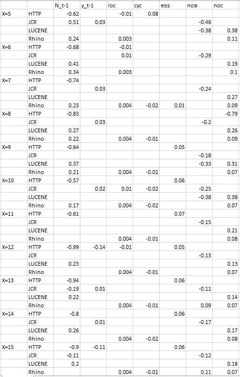
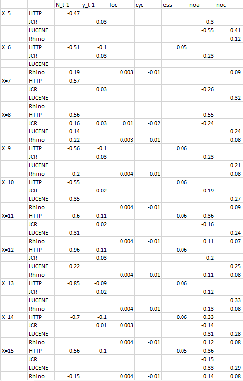
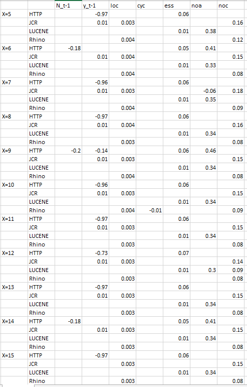
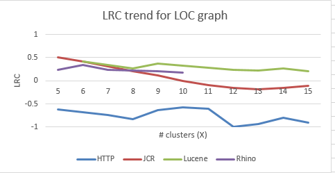
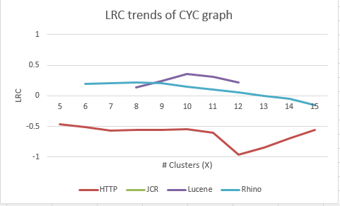
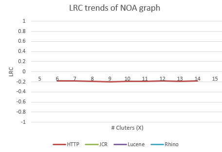

Bug Contagion Results with Different Cluster Number X
Results for loc graphs with different cluster numbers
The below table reports the regression coefficients including LRCs under different cluster number X (Results with blank cells mean p>0.05).

Results for cyc graphs with different cluster numbers
The below table reports the regression coefficients including LRCs under different cluster number X (Results with blank cells mean p>0.05).

Results for noa graph with different cluster numbers
The below table reports the regression coefficients including LRCs under different cluster number X (Results with blank cells mean p>0.05).

LRC trends with different cluster number X
The below graph reports the trends of LRCs for each cluster graph with different cluster number X(X=5-15). As is shown in the graph, results do not fluctuate significantly with different X's.


